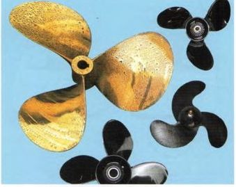
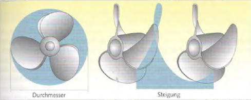
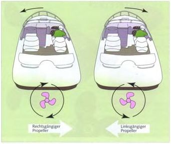

Существуют 2‑, 3‑ и 4‑лопастные гребные винты. Двухлопастные чаще всего используются только на небольших подвесных моторах, а четырёхлопастные — на тяжёлых яхтах.
В так называемой системе Duo‑Prop два винта, вращающиеся в противоположных направлениях, расположены один за другим на одном валу. Благодаря этому повышается эффективность Z‑привода.

На гребном винте обычно указываются параметры, например 9½ × 8 (дюймов) или 255 × 240 (мм).
Первое число обозначает диаметр винта — диаметр окружности, которую описывают концы лопастей при одном обороте.
Второе число обозначает шаг — расстояние, которое винт прошёл бы за один оборот в твёрдой среде, подобно шурупу в дереве. Винты различного диаметра могут иметь одинаковый шаг и наоборот.
Правильный диапазон оборотов указывается производителем двигателя.
Повреждённые винты необходимо немедленно заменять. Иначе не только снижается их эффективность и увеличивается расход топлива, но они также могут вызвать повреждения редуктора.

Если гребной винт, если смотреть сзади при движении лодки вперёд, вращается вправо (по часовой стрелке), он считается правого хода.
Винт, который при движении вперёд вращается влево, называется левым.
Поскольку при движении назад направление вращения винта меняется, правый винт тогда вращается влево, а левый — соответственно вправо.
Понятия «правого хода» и «вращающийся вправо» не являются полностью одинаковыми. Моторные лодки почти всегда имеют правые винты. Это важно знать при маневрировании лодками с жёстким валом. Моторные яхты с двумя двигателями обычно имеют левый винт слева (по левому борту) и правый винт справа (по правому борту). Реже встречается схема с винтами, направленными внутрь.
Гребной винт создаёт не только желаемую тягу вперёд. Он также слегка смещается в сторону, словно катится как колесо по грунту. Поэтому это явление называют «эффектом винта». При этом винт смещает корму в свою сторону, а нос поворачивается в противоположную.
► Правый винт при движении вперёд слегка уводит корму вправо.
Лодка при этом немного отклоняется влево от курса. У левого винта поведение противоположное. При движении назад эффект возникает в обратном направлении и выражен сильнее.
На подвесных моторах и Z‑приводах этот эффект можно частично или полностью компенсировать регулируемым трим‑плавником на кавитационной плите.
При использовании противоположно вращающихся винтов на яхтах с двумя двигателями эффект полностью компенсируется.